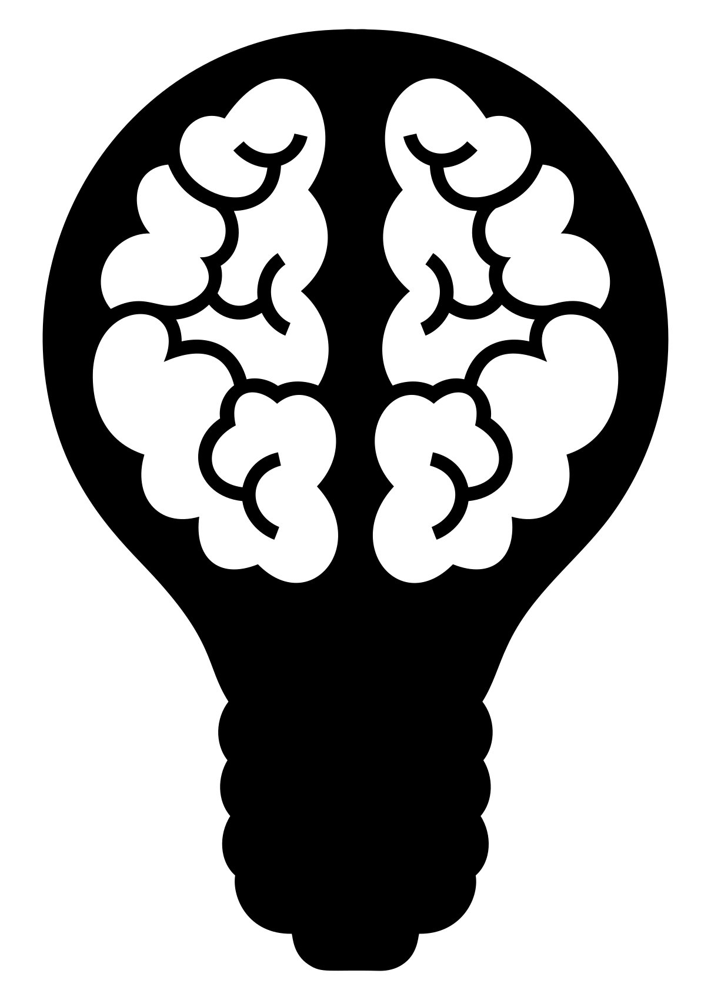

CS 463G & CS 663
(Intro to) AI
Lecture 1: Definitions of AI
Fall 2026
Today
- What the words artificial and intelligence suggest
- Four classic perspectives on defining AI
- The Turing Test and the idea of acting humanly
- Human-like thinking, rational thinking, and rational action
- Weak AI, strong AI, and the roots of the field
What should count as intelligence: looking human, thinking correctly, or choosing good actions?

Intelligence

Rational action
The Words Matter
Before defining AI as a field, start with the two words in the name.
What Do We Mean by “Artificial”?
Artificial means made or produced by human effort.
- Derived from the Latin word artificialis:
- ars = art
- facere = to make
- In AI, the word usually refers to systems created by humans that imitate, extend, or automate natural capabilities.
What Do We Mean by “Intelligence”?
Intelligence is the ability to acquire, understand, and apply knowledge or skills.
Examples of intelligent behavior:
- Reasoning: drawing conclusions from information
- Learning: adapting from experience
- Problem-solving: developing solutions for challenges
- Perception: sensing and interpreting the environment
Four Ways to Define AI
Definitions of AI often differ along two axes: human-centered vs. rational-centered, and thought vs. behavior.
What Is Artificial Intelligence?
Different approaches to defining AI:
| Thought |
Mimics human thinking and cognitive processes |
Uses formal logic and rational reasoning |
| Behavior |
Mimics human actions and behavior |
Acts to achieve goals optimally |
Four Perspectives on AI
Human-Centered
- Acting humanly
- Thinking humanly
The goal is resemblance to human behavior or cognition.
Rational-Centered
- Thinking rationally
- Acting rationally
The goal is good reasoning or good decisions.
Should AI imitate humans, or should it focus on optimal decision-making?
Acting Humanly
One way to define AI is by observable behavior: can the machine act like a human?
The Turing Test
- Proposed by Alan Turing in Computing Machinery and Intelligence (1950).
- Goal:
- Determine whether a machine can behave indistinguishably from a human.
The Turing Test focuses on behavior, not internal reasoning.
How the Turing Test Works
- A human interrogator communicates with:
- Communication is text-based only.
- If the interrogator cannot reliably distinguish the machine from the human:
- the machine is considered to have “passed” the Turing Test.
Example: Repeated Question
Question: Ask “1 + 1 = ?” three times.
Simple Machine
- “1 + 1 = 2.”
- “1 + 1 = 2.”
- “1 + 1 = 2.”
Human
- “1 + 1 = 2. That’s too easy!”
- “Are you making fun of me? I just answered this!”
- “What is wrong with you? Why do you keep asking this?”
Observation
- Humans often show:
- emotion
- frustration
- context awareness
- Simple machines may respond consistently but lack natural human variation.
- Try asking the same question to a more advanced AI system, such as ChatGPT, and see how it responds.
Thinking Humanly
Another perspective asks whether a system models how humans think.
Relationship to Cognitive Science
- Attempts to model and simulate human thought processes.
- Focuses on understanding:
- how humans think
- how humans learn
- how humans make decisions
- Example:
- neural networks inspired by the structure of the brain
Cognitive Science
- Interdisciplinary study of the human mind.
- Combines knowledge from:
- psychology
- neuroscience
- linguistics
- philosophy
Cognitive science gives AI ideas for systems that imitate human reasoning and learning.
Thinking Rationally
Here the standard is not “human-like,” but correct reasoning.
Logic and Probability
- Focuses on correct reasoning using formal methods.
- Goal:
- derive conclusions logically and consistently.
The Role of Logic
- Propositional logic: reasoning with true/false statements
- First-order logic: reasoning about objects, relations, and quantities
Reasoning Under Uncertainty
- Real-world environments contain uncertainty.
- Probability helps AI:
- make predictions
- handle incomplete information
- reason under uncertainty
Examples:
- Bayesian inference
- Probabilistic graphical models
Acting Rationally
The dominant modern view of AI is often this one: choose actions that produce good outcomes.
Acting Rationally
- Focuses on achieving the best possible outcome.
- Does not require human-like behavior.
A rational agent perceives its environment and acts to maximize expected performance.
- Examples:
- autonomous vehicles making safe driving decisions
- game-playing AI optimizing strategies to win
Rational Agent
An agent:
- perceives its environment
- takes actions to achieve goals
Rationality involves:
- choosing actions that maximize expected performance
- using available information and predictions about the future
Rational behavior can be intelligent even when it does not look human.
Weak AI and Strong AI
AI systems can also be categorized by the breadth of their capabilities.
Weak AI vs. Strong AI
According to the functions and capabilities of AI, we can categorize it into two types:
Weak AI
- Also called narrow AI
- Designed for specific tasks
- Does not possess consciousness, self-awareness, or general intelligence
Strong AI
- Also called artificial general intelligence
- Hypothetical human-level general intelligence
- Capable of broad reasoning and adaptation across domains
Weak AI
- Designed for specific tasks only.
- Does not possess:
- consciousness
- self-awareness
- general intelligence
- Examples:
- virtual assistants
- recommendation systems
- spam filters
Strong AI
- Hypothetical AI with human-level general intelligence.
- Capable of performing any intellectual task a human can perform.
- Characteristics:
- general reasoning ability
- learning across domains
- adaptation to new tasks
Current AI systems are powerful, but AGI has not yet been achieved.
Roots of Artificial Intelligence
AI is an interdisciplinary field. Its ideas come from many older disciplines.
Roots of Artificial Intelligence
- AI draws ideas from many disciplines.
- Progress in AI often depends on combining ideas from multiple fields.
Takeaways
- AI can be defined by human resemblance or by rational performance.
- The Turing Test is about acting humanly.
- Logic and probability support thinking rationally.
- Rational agents choose actions to maximize expected performance.
- Modern AI is broad, but AGI remains a hypothetical goal.
Asset credits